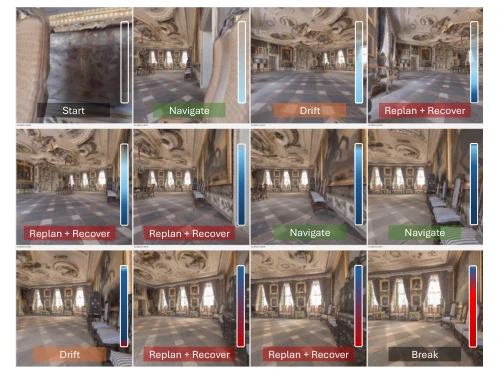
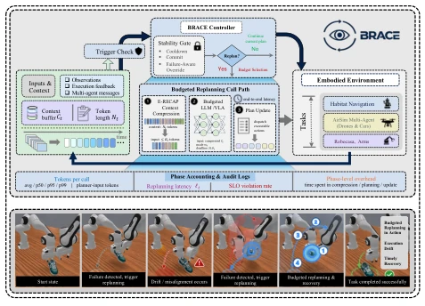
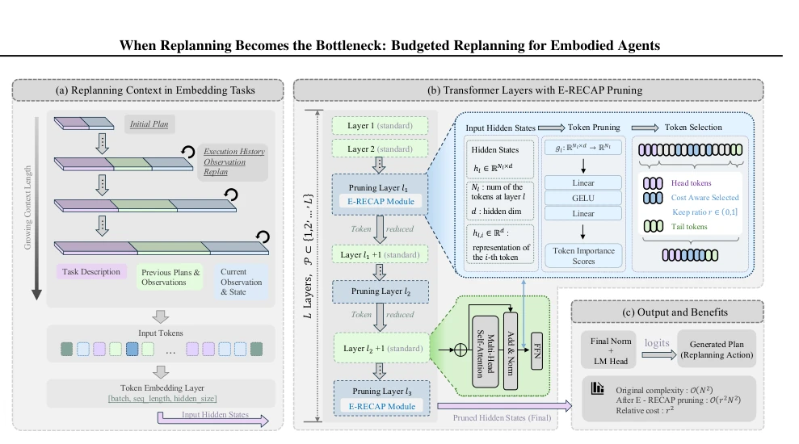
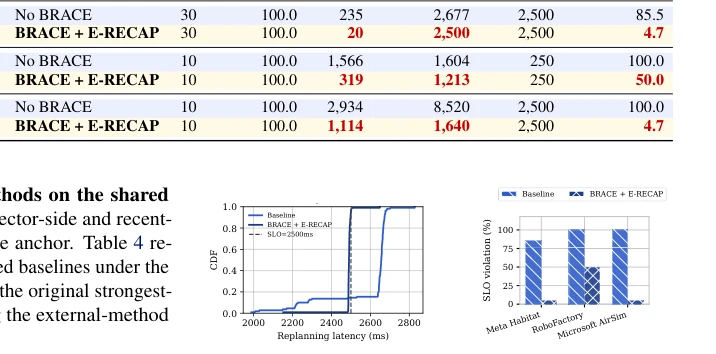
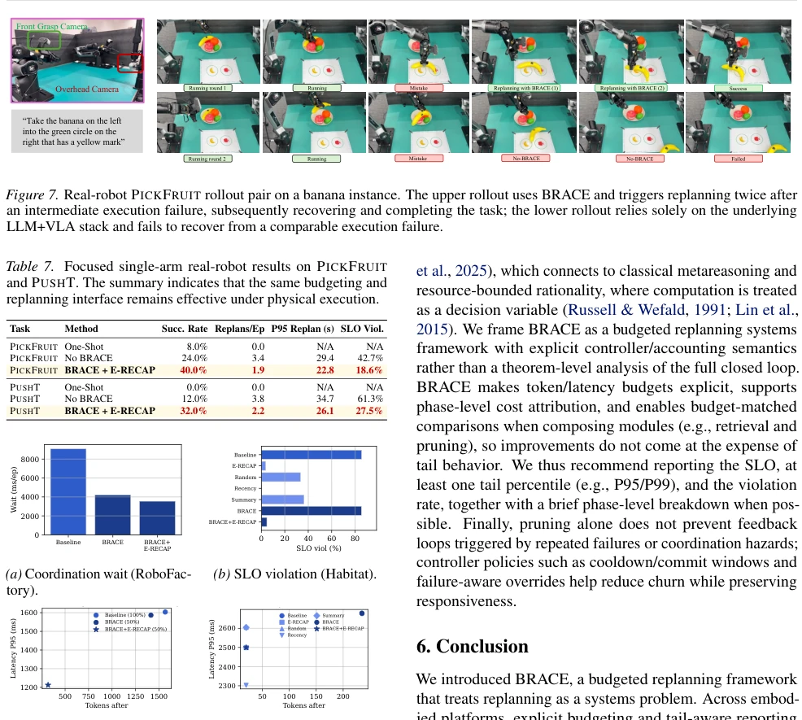
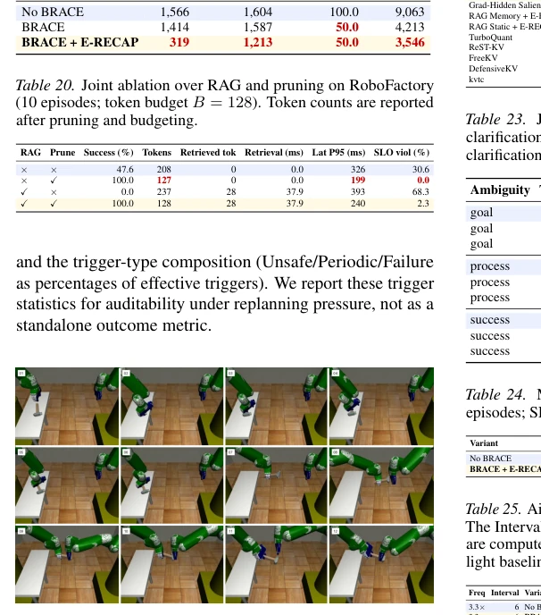
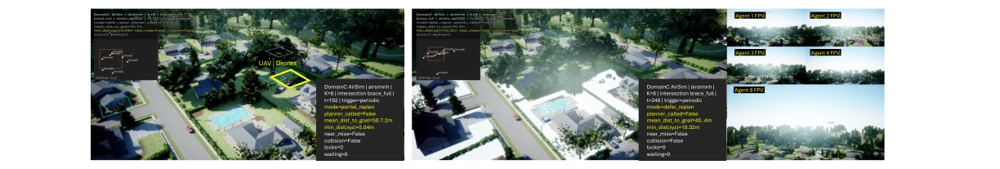
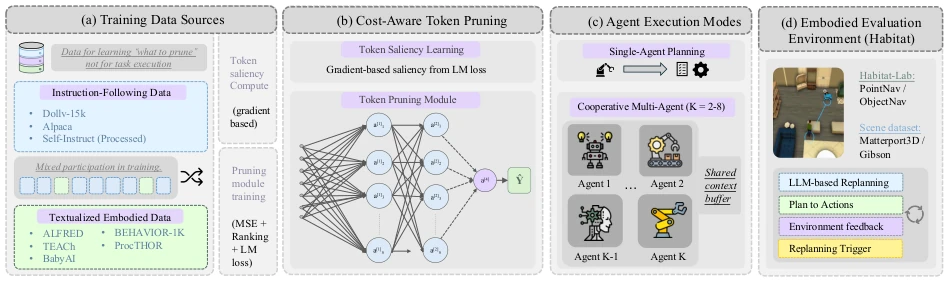
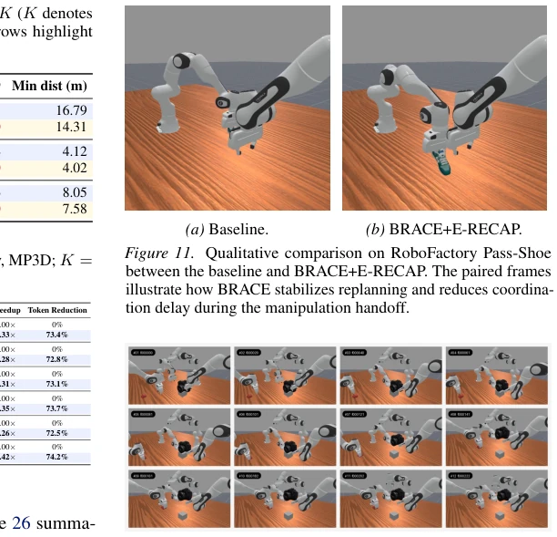
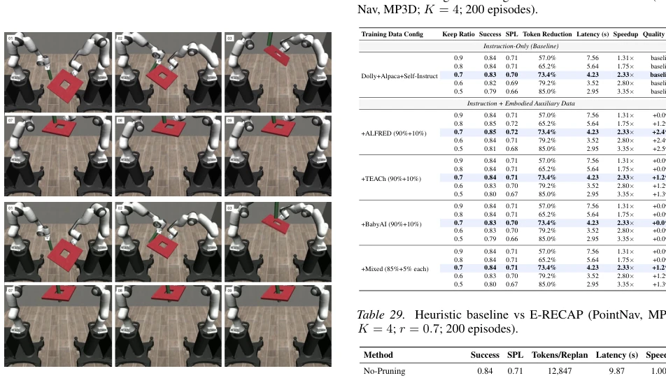

This paper finally punctures the 'success illusion' of embodied intelligence. Many works only focus on task success rates, yet ignore the latency explosion during replanning. The authors propose the BRACE framework, treating replanning as a budgeted system primitive rather than an infinite-consuming bottomless pit. E-RECAP's progressive pruning is indeed effective, cutting tokens by more than half without sacrificing performance. However, this is essentially an engineering optimization problem with moderate theoretical depth. Moreover, it mainly runs in simulation; while real-robot results have some highlights, there is still a distance from large-scale deployment. The greatest contribution is reminding the community: do not just look at success rates, check your SLO violation rates, otherwise robots may forever 'successfully' get stuck in timeouts.
研究动机Motivation
具身智能在部分可观测和噪声环境下，长程计划容易失效，必须频繁重规划（Nasiriany et al., 2024; Feng et al., 2025）。现有系统常把重规划视为轻量查询，忽略了LLM/VLA调用时上下文（任务规范、历史、多智能体消息）随时间累积的问题。随着上下文增长，Transformer计算复杂度超线性上升，导致延迟出现长尾分布。现有评估多强调平均延迟或任务成功率，掩盖了实时性 deadline 的丢失（Sohn et al., 2025）。这导致系统看似成功，实则频繁超时，甚至引发连锁反应。因此，需要显式地将重规划建模为预算控制问题，并报告尾部延迟和SLO违例率。
In embodied intelligence, long-horizon planning is prone to failure in partially observable and noisy environments, requiring frequent replanning (Nasiriany et al., 2024; Feng et al., 2025). Existing systems often treat replanning as lightweight queries, ignoring the problem of context accumulation over time during LLM/VLA calls (task specifications, history, multi-agent messages). As context grows, Transformer computational complexity rises super-linearly, causing latency to exhibit a long-tail distribution. Existing evaluations mostly emphasize average latency or task success rates, masking the loss of real-time deadlines (Sohn et al., 2025). This leads to systems appearing successful while actually frequently timing out, even triggering chain reactions. Therefore, it is necessary to explicitly model replanning as a budget control problem and report tail latency and SLO violation rates.

Figure 1. Qualitative motivating example on Meta Habitat. As replanning history accumulates, the context grows and produces tail-latency spikes, motivating budgeted context compression.
BRACE is a closed-loop controller that treats replanning as a budget control loop. The pipeline includes: Trigger detection, Stability gating (Cooldown/Commit), Budget selection (Token Budget Bt, Latency SLOt), Context compression (E-RECAP), Planner invocation. E-RECAP is the core innovation, performing progressive pruning on long-horizon replanning contexts. It utilizes a lightweight predictor on specific Transformer layers (Pruning Layers) to calculate token importance scores, retaining head and tail key tokens, and pruning middle tokens based on scores. This ensures the number of tokens input to the planner does not exceed budget Bt. Additionally, BRACE introduces Phase Accounting, recording the time consumed in each stage of compression, retrieval, and planning, supporting auditing and budget-matched comparisons. The controller also includes a failure-aware override mechanism to prevent frequent oscillation. Specifically, the controller maintains state σt, deciding whether to invoke the planner based on trigger τt and stability gating. If invoked, it selects mode mt and sets the budget. E-RECAP selects the index set via Formula (5), combining fixed head/tail with high-score tokens to achieve cross-layer progressive compression. This design enables the system to distinguish overheads of different modules, avoiding attributing latency to the planner itself, thus supporting fairer algorithm comparisons.

Figure 2. Overview of BRACE: a closed-loop controller that determines whether to invoke replanning and selects the per-call token budget and latency SLO, with E-RECAP as a composable token-pruning module on the replanning call path.

Figure 3. E-RECAP module. A lightweight predictor scores context tokens using intermediate hidden states, and pruning is applied progressively at selected layers. The kept set includes fixed head and tail tokens plus top-scoring tokens, producing a shorter context that satisfies the planner-input budget.
Evaluated on Meta Habitat, RoboFactory, AirSim, and real robots (PICKFRUIT, PUSHT). Baselines include No BRACE (no budget/compression), Open-loop, Frozen-plan, and other budget-matched pruning methods. Metrics focus on task success rate, replanning token count, tail latency (P95/P99), and SLO violation rate. Results show that BRACE+E-RECAP maintains saturated success rates while reducing SLO violation rates from 85.5% to 4.7% (Habitat), with token reduction of 62-92%. Under harder settings (RoboFactory), the no-budget baseline fails, while BRACE achieves 80% success. Real robot experiments validate interface effectiveness. Ablation studies indicate E-RECAP significantly accelerates while maintaining quality, and budget-matched comparisons prove pruning outperforms random truncation.

Figure 4. Tail-latency distributions and SLO violation rates across platforms.

Figure 8. Diagnostic views of coordination wait, SLO violations, and token–latency tradeoffs across the RoboFactory and Habitat domains.

Figure 10. Qualitative extension on RoboSuite Two-Arm Handover. The contact sheet shows a successful coordinated manipulation rollout beyond the RoboFactory benchmark.
其他图片Other Figures

Figure 6. Qualitative comparison on AirSimNH. The baseline accumulates delayed replanning decisions within the same trigger window, whereas BRACE shortens the effective replanning path and completes the interaction with fewer deadline misses. The corresponding quantitative results are reported in Table 2 and Appendix Table 10.

Figure 9. E-RECAP experimental setup overview. The diagram summarizes the replanning data flow, pruning module, and planner interface used for the Habitat acceleration experiments.

Figure 12. Additional qualitative example on RoboFactory TakePhoto. The frame sequence depicts a successful multi-agent manipulation rollout that complements the Pass-Shoe harder- setting results.

Figure 13. Full-rollout comparison on RoboSuite TWO-ARM PEG-IN-HOLE. The combined contact sheet contrasts a BRACE rollout that stabilizes replanning and successfully completes the task against the corresponding No-BRACE baseline, which re- peatedly triggers replanning without controller-level budgeting or stabilization and ultimately fails.